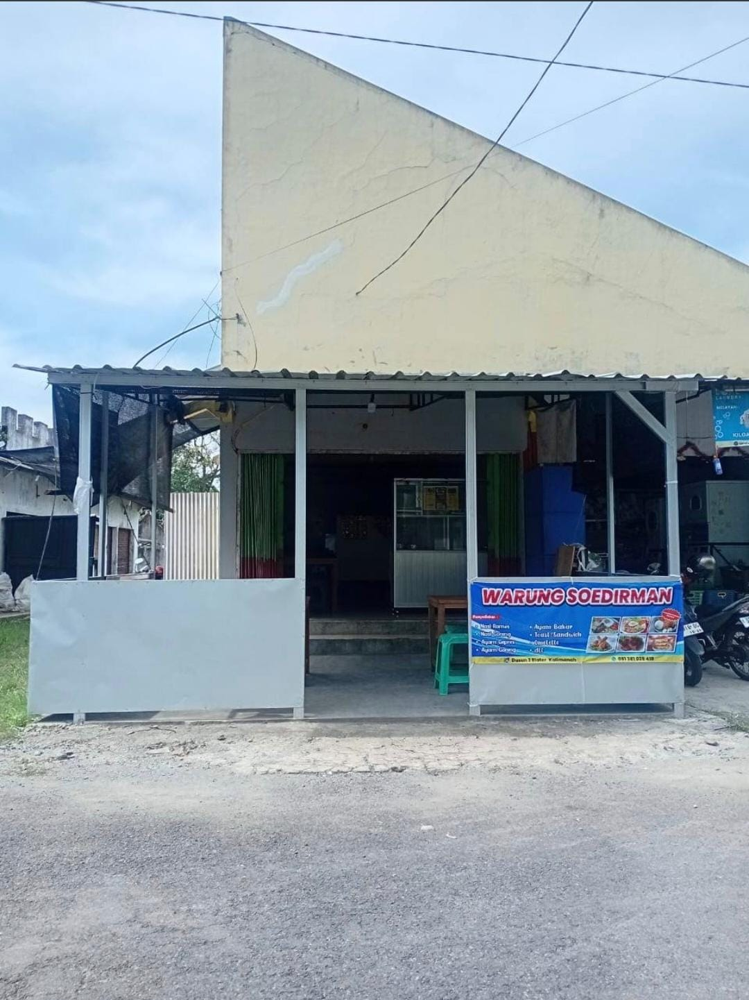

Untuk bertanya tentang menu, hubungi kami melalui WhatsApp.
Chat WhatsApp ↗WARUNG MAKAN WARSOED
Teman Makan,
Teman Nyaman.
Pilihan menu sederhana dan lezat untuk menemani waktu makanmu.

Enak • Praktis • Bersahabat
TENTANG WARSOED
Tempat singgah untuk mengisi energi.
WARSOED menyediakan beragam pilihan makanan untuk menemani waktu makan. Website ini dibuat agar pengunjung dapat melihat daftar menu, kisaran harga, serta informasi kontak dan lokasi dengan mudah.
KAMI SIAP MENYAPA
Kontak & Lokasi
Hubungi WARSOED atau lihat petunjuk lokasi melalui tautan berikut.
Ikuti informasi WARSOED melalui akun Instagram.
@WarsoedYukMakan_ ↗Lokasi
Jl. Kendil Wesi, Dusun 2, Blater, Kalimanah, Purbalingga, Jawa Tengah 53371.
Lihat di Maps ↗